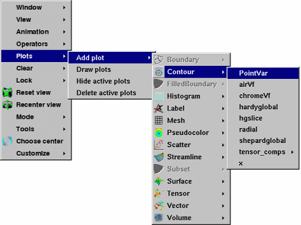

The Plot toolbar and Plot menu let you create new plots using variables from the open databases and also let you hide, delete, and draw the plots that correspond to the selected plot entries in VisIt's Plot list. The Plot menu is always available in the Popup menu but the Plot toolbar is not visible by default. If you want to make the Plot toolbar visible, you can turn it on in the Popup menu's Customize menu. The Plot menu and toolbar are shown in figure.
| Figure 21 |
|  |
| Figure 22 |